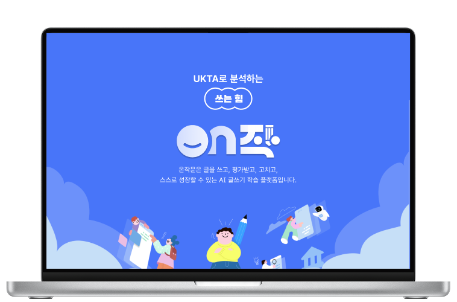

독서지수로 측정하는 읽는 힘
온독
모든 학습자가 자신의 문해력 수준을 인지하고,
수준에 맞는 독서를 통해 사고력과 어휘력을
성장시킬 수 있도록 돕습니다.
체험하러가기
개인 읽기 지수에 맞춘 도서 추천과 진도 관리,
내 책장과 찜·완독·맞춤 도서까지 한 번에.

모든 학습자가 자신의 글쓰기 수준을 정확히 이해하고, UKTA 기반의 정교한 채점과 AI의 상세한 피드백을 통해
사고력과 표현력을 단계적으로 성장시킬 수 있도록 돕습니다.
온작문 바로가기